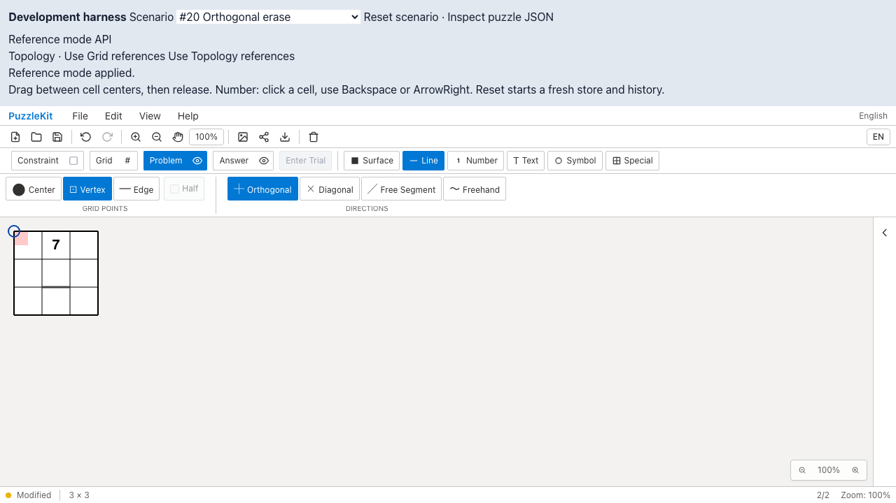
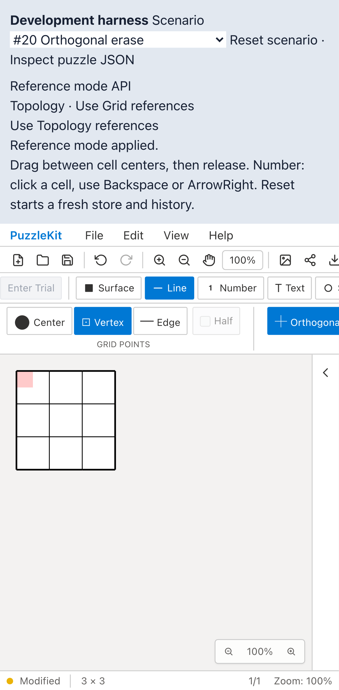
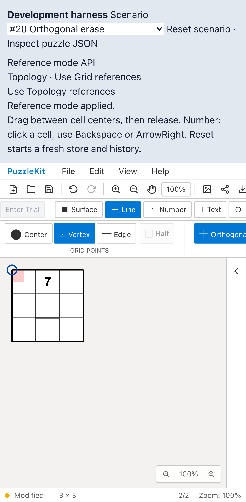
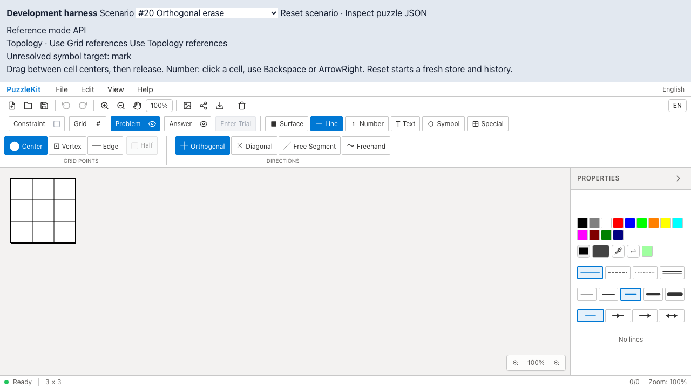
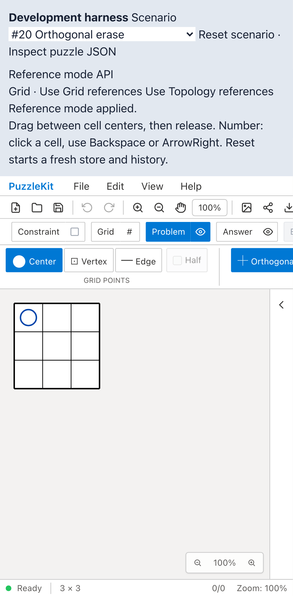
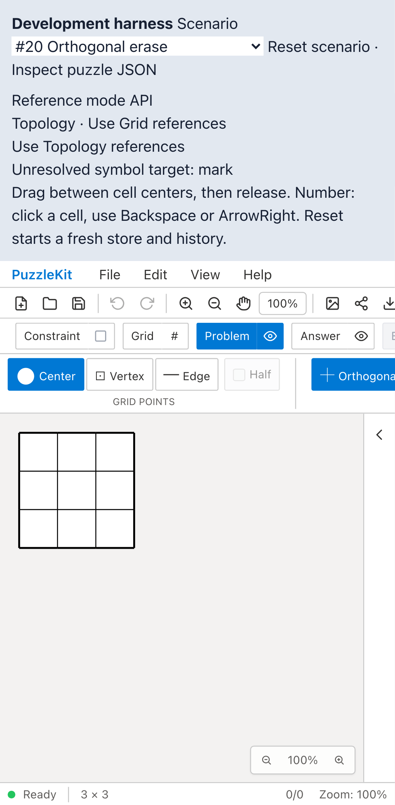

開発ハーネスから公開APIを呼びます。通常のFile Openで同じ盤面を開き、マウス／タッチで描いた線を保持して参照モードを切り替えます。Beforeは線を失い、Afterは数字・記号・頂点塗りとともに保持します。曖昧な参照は変更せず拒否します。
PCはマウス、MobileはPlaywright + ChromiumのPixel 7タッチエミュレーションです。物理端末ではありません。画像はGitHubのQA文書でも閲覧できます。





